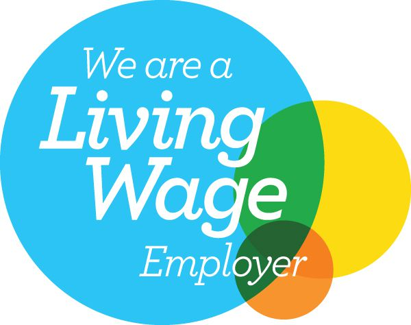
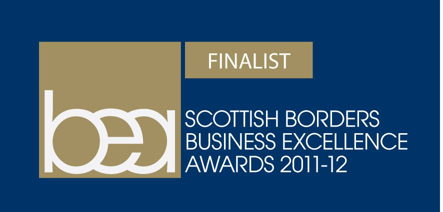
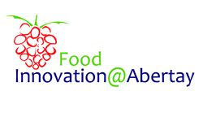
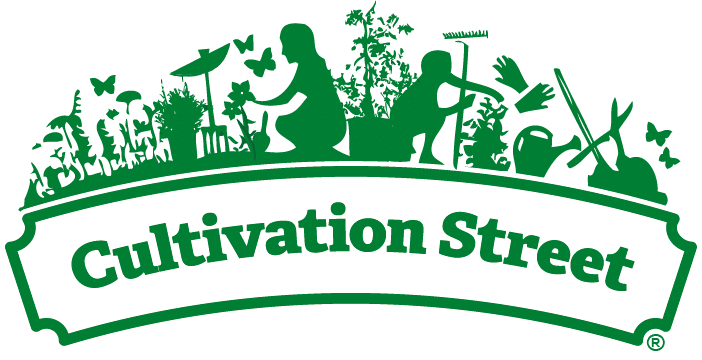
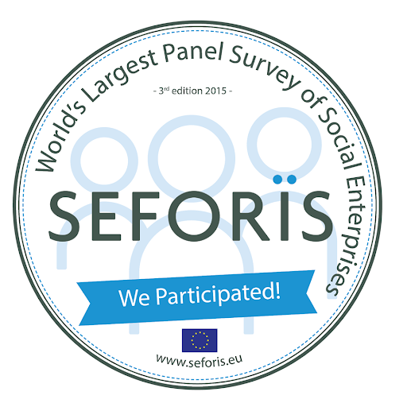

What We Do
- Training Provider
- Youth Training
- Workshops
- Energised Lunches©
- Food as Medicine©
- Cookery Classes
- Seasonal and Local Produce
- International Cuisine
- Low Budget Meals
- Special Diets
- Vegan/Vegetarian Meals
- Little Cooks (Under 12s)
- Seminars & Talks
- Energised Lunches
- Food as Medicine
- Social Enterprises
- Community Interest Companies
We are...
a Training Provider
We offer...
Workshops
We provide...
Classes
We deliver...
Seminars and Talks
Our Awards & Commendations





2012 Innovation Award for Energised Lunches©
1st Social Enterprise to be accredited as a Living Wage Employer in the Borders - 2016
1st Cookery Training Provider to be accredited as a Living Wage Employer in Food and Health in Scotland - 2016
2018 Finalist in Cultivation Street